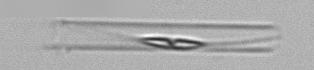
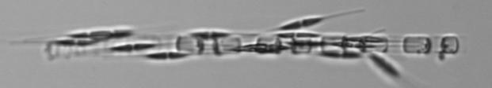

Cylindrotheca
Examples from 2012:
IFCB5_2012_009_212600_03474

IFCB1_2009_195_212603_04807

IFCB5_2012_009_212600_01173
References:
(1) Hasle & Syvertsen state: "The identification of C. closterium may have caused more problems and more confusion than the identification of any other diatom encountered in marine plankton (see Lennoxia faveolata and Phaeodactylum tricornutum). When working with coastal material, the most common problem is distinguishing between C. closterium and the coarser N. longissima; examination of water mounts is usually not sufficient. Not too thoroughly acid-cleaned material is better since this often shows the two delicate valves and the many bands of C. closterium lying together, seemingly twisted around each other in the rostrate ends."
(2) Hoppenrath & Drebes (2009) state: "When identified as a living cell in water mounts it is nearly impossible to distinguish this species [C. closterium] from the slightly coarser Nitzschia longissima. Most probably our registration of the taxon comprises a mixture of both species."
(3) Thomsen et al (1993) state: "The size and shape of Lennoxia faveolata looks surprisingly similar to certain planktonic marine diatoms of Nitzschia subg. Nitzschiella. However, the ultrastructural details of the valve face discernible only with TEM differentiates this taxon from all other diatom genera." - bottom line: see their plates - in the electron microscope, this is an extremely distinctive diatom.
IFCB5_2012_232_231225_00726
